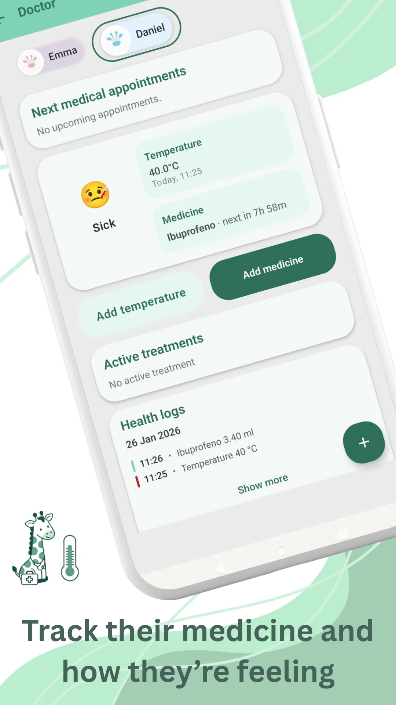

Nesta página · 8 seções
Em resumo
No Brasil, o primeiro grande dia de vacinas de rotina costuma ser aos 2 meses. Leve a caderneta de vacinação, vista o bebê com roupa fácil de tirar pelas pernas e, se puder, ofereça o peito ou a mamadeira durante a aplicação. É normal que depois ele fique irritado, com o local vermelho ou com um pouco de febre por 1 a 2 dias. Se ele tem menos de 3 meses e a temperatura chega a 37,5 °C na axila (38 °C no reto), precisa ser avaliado por um médico com urgência: ligue já para o pediatra ou vá ao pronto-atendimento.
- Dia das vacinas
- 2 mesessegundo o calendário oficial
- Injeções
- 3+ gotinhas de rotavírus na boca
- Desconforto
- 1-2 diasdor, irritação, febre baixa
- Espera no posto
- 15-30 minpor precaução, caso haja reação imediata
Lembro perfeitamente da primeira vez que levei meu bebê para vacinar. Ele tinha dois meses e ainda me parecia pequenininho demais. Na sala de espera, eu olhava para ele e pensava: "Será que é mesmo necessário tão cedo?" "E se acontecer alguma coisa?"
Ninguém fala do nó no estômago que dá quando você sabe que ele vai chorar e, mesmo assim, diz sim. Mas também quase ninguém fala da tranquilidade com que você volta para casa depois. Aqui vai o que eu queria ter sabido antes daquele dia.
Quais vacinas costumam ser aplicadas aos 2 meses
As vacinas funcionam como um treino para o sistema imunológico: o corpo aprende a reconhecer vírus e bactérias sem precisar enfrentar a doença. Elas começam cedo porque algumas dessas infecções, como a coqueluche, são mais graves justamente nos primeiros meses de vida.
No Brasil, o calendário do SUS prevê aos 2 meses:
- A pentavalente, uma única injeção que protege contra difteria, tétano, coqueluche, hepatite B e Haemophilus influenzae tipo b.
- A VIP, vacina inativada contra a poliomielite (paralisia infantil).
- A pneumocócica conjugada, contra doenças causadas pelo pneumococo, como pneumonia, otite e meningite.
- A do rotavírus, em gotinhas pela boca.
A BCG e a primeira dose da hepatite B são aplicadas ainda na maternidade. O calendário muda de tempos em tempos (por exemplo, o SUS está trocando a pneumocócica 10-valente pela 20-valente), então a unidade de saúde ou o pediatra vão dizer exatamente o que está previsto para o seu bebê. Você pode conferir no calendário nacional de vacinação da criança, do Ministério da Saúde. Na rede particular, o calendário da SBP inclui outras vacinas além das do SUS, e o pediatra orienta. Se você mora fora do Brasil, consulte o calendário oficial do seu país.
Como se preparar para o dia da vacina
- Leve a caderneta de vacinação e anote as dúvidas que quiser perguntar.
- Vista o bebê com roupa fácil de tirar pelas pernas: nessa idade, as injeções são aplicadas na coxa.
- Peito, mamadeira ou pele a pele durante a aplicação. Mamar, sugar e o contato com você acalmam e reduzem o choro.
- Pergunte ao pediatra sobre antitérmicos. Nessa idade, não dê paracetamol, dipirona ou outro remédio por conta própria, nem "por precaução" antes da vacina: a dose depende do peso, e um médico precisa avaliar qualquer febre antes.
- Conte com ficar 15 a 30 minutos no posto depois da vacina.
Acompanhe tudo no Raffy
Sono, mamadas, crescimento e rotinas em um único app gratuito para Android.

O momento da picada
Não vou mentir. O bebê chora. E por dentro, algo aperta em você. Mas o choro dura segundos. O abraço dura mais. E a proteção dura anos.
O que me ajudou foi segurá-lo no colo, já mamando, e falar baixinho o tempo todo. Quando terminou, em poucos minutos ele estava calmo de novo.
Depois: o que é normal
Nas 24 a 48 horas seguintes, é comum aparecer:
- Dor, vermelhidão ou um carocinho no local da injeção (o carocinho duro pode levar semanas para sumir).
- Irritação, mais sono que o normal ou menos vontade de mamar.
- Um pouco de febre (se ele tem menos de 3 meses, veja o quadro de segurança abaixo).
Costumam ser reações leves que passam sozinhas. Ajuda oferecer o peito ou a mamadeira com mais frequência, não agasalhar demais e colocar uma compressa fria (nunca gelo direto) no local. Ter febre ou não ter não diz nada sobre quanto a vacina protege: ela protege igual.
Efeitos graves são muito raros, e as vacinas passam por controles rigorosos antes de serem aprovadas e enquanto estão em uso. No Brasil, o calendário é definido pelo Programa Nacional de Imunizações, do Ministério da Saúde, e acompanhado por sociedades científicas como a Sociedade Brasileira de Pediatria.
Segurança pediátrica: quando chamar o pediatra
Ligue 192 (SAMU) ou vá ao pronto-socorro se:
- Ele tiver dificuldade para respirar, o rosto ou os lábios incharem ou aparecerem placas vermelhas (urticária) pelo corpo nos minutos ou horas após a vacina.
- Tiver uma convulsão, ou estiver muito pálido, mole ou não responder como de costume.
- Tiver menos de 3 meses e a temperatura chegar a 37,5 °C na axila (38 °C no reto): ele precisa ser avaliado por um médico com urgência, no mesmo dia. Ligue já para o pediatra ou vá ao pronto-atendimento.
Ligue para o pediatra ou procure a unidade de saúde se:
- Tiver 40 °C ou mais, em qualquer idade.
- Chorar de forma inconsolável por 3 horas ou mais.
- Depois da vacina do rotavírus, tiver choro em crises, vômitos repetidos, recusar o peito ou a mamadeira ou tiver sangue nas fezes: procure atendimento sem demora.
- A febre durar mais de 48 horas, ou o local da injeção estiver muito inchado, aumentando ou sem melhorar depois de alguns dias.
- Algo não parecer certo para você, mesmo que não esteja nesta lista.
O que me ajudou a decidir
Me ajudou entender que muitas doenças que hoje quase não vemos não desapareceram por acaso. A pólio não deixou de paralisar crianças do nada. Ela saiu do nosso cotidiano porque, por anos, as famílias vacinaram. Não ver uma doença não significa que ela não exista: significa que a prevenção está funcionando.
Também entendi que vacinar não protege só o seu bebê. Protege o recém-nascido que ainda é pequeno demais para ser vacinado e as pessoas que não podem receber certas vacinas por motivos médicos.
E tive dúvidas, claro. A melhor coisa que fiz foi conversar com o pediatra, perguntar sem medo e ouvir respostas baseadas em evidências. Não se trata de não questionar. Trata-se de questionar bem.
Hoje não lembro o dia exato em que ele teve febre. Lembro da tranquilidade de saber que ele estava protegido. Se você está lendo isso antes da primeira vacina: é normal doer mais em você do que nele, é normal duvidar e é normal, depois, sentir que fez a escolha certa.
Perguntas frequentes
Com que idade é a primeira vacina do bebê?
No Brasil, as primeiras vacinas, BCG e hepatite B, são aplicadas ainda na maternidade, e a primeira rodada do calendário de rotina é aos 2 meses. Contra o vírus sincicial respiratório (VSR), o SUS oferece a vacina para a gestante, a partir da 28ª semana, e, para bebês prematuros ou com algumas doenças, um anticorpo (nirsevimabe) que não é uma vacina.
Quantas injeções o bebê toma aos 2 meses?
No SUS, normalmente 3 injeções nas coxas (pentavalente, VIP e pneumocócica), além da vacina do rotavírus em gotinhas pela boca. A pentavalente reúne cinco vacinas em uma só injeção. Na rede particular, o número pode variar.
Posso dar paracetamol antes da vacina?
Não dê por conta própria. A SBP não recomenda usar antitérmico de forma preventiva e de rotina antes das vacinas: ele deve ser usado só se houver febre ou dor importante depois, e em um bebê com menos de 3 meses qualquer febre precisa ser avaliada por um médico antes de dar remédio. Se o pediatra indicar, ele define a dose pelo peso. A dipirona só é indicada a partir dos 3 meses (e 5 kg) e o ibuprofeno, a partir dos 6 meses (e 5 kg).
Quanto tempo dura a febre depois da vacina?
Costuma aparecer nas primeiras horas e durar de 24 a 48 horas. Se durar mais de 48 horas, fale com o pediatra. Se o bebê tem menos de 3 meses e a temperatura chega a 37,5 °C na axila (38 °C no reto), ele precisa de avaliação médica urgente: ligue já para o pediatra ou vá ao pronto-atendimento.
É normal o bebê dormir muito depois de vacinar?
Sim, é comum ele ficar mais sonolento ou mais irritado nesse dia. Ofereça o peito ou a mamadeira quando ele pedir. Se estiver tão mole que não acorda para mamar, ou não responder como de costume, ligue 192 ou vá ao pronto-socorro.
Fontes
- Ministério da Saúde · PNICalendário Nacional de Vacinação 2026: criança
- Ministério da Saúde · PNIInstrução Normativa do Calendário Nacional de Vacinação 2026 (cópia hospedada pela SBIm)
- Ministério da SaúdeSUS passa a oferecer imunobiológico para proteger bebês e crianças com comorbidades contra a bronquiolite
- Ministério da SaúdePerguntas Frequentes - Vacinação
- Sociedade Brasileira de PediatriaCalendário de Vacinação da SBP: atualização 2026-2027
- Sociedade Brasileira de PediatriaAbordagem da febre aguda em Pediatria e reflexões (Documento Científico nº 206)
- Sociedade Brasileira de PediatriaBoas Práticas em Vacinação: Evitando Erros (cópia hospedada pela SBIm)
- Organização Mundial da Saúde (em inglês)Vaccines and immunization: What is vaccination?
Revisamos este artigo com base nestas fontes em 7 nov 2026. Conteúdo educativo, não é orientação médica. Política editorial